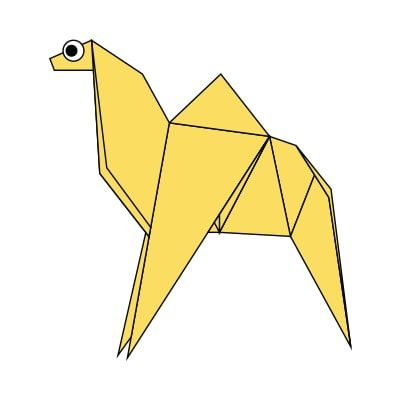

These are some of the origami designs.

Interesting Facts about Camel
1. Camel's ears are furry.
2. Camel can move easily across the sand because of its specially designed feet.
3. When they find water, they drink as much as possible.

Interesting Facts about chamelion
1. Pigeons are incredibly complex and intelligent animals
2. Pigeons are renowed for their outstanding navigational abilities
3. Pigeons have excellent hearing abilities

Interesting Facts about Bear
1.Bears have excellent senses of smell, sight and hearing
2.Bears care deeply about family members.
3.There are eight different species of bears.
Interesting Facts about Panda
1.They have great camouflage for their environment.
2.Their eyes are different to normal bears.
3.They spend a lot of their day eating.

Interesting Facts about flying cicada
1.Cicadas can survive a huge fall as babies.
2.Females may be attracted to the sound of motors.
3.The loud whirring or buzzing sound you hear is an all-male cicada chorus.